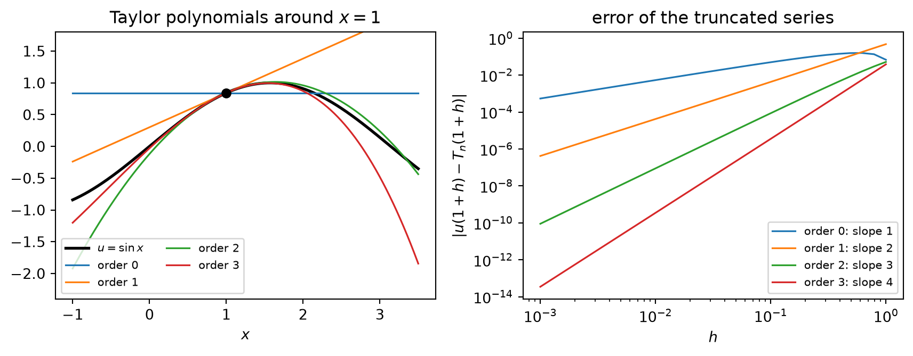
3 The numerical toolbox I: derivatives, integrals, roots
NoteLearning goals
After this unit you can
- derive finite difference formulas and their truncation error from the Taylor series,
- measure the order of convergence of a numerical method,
- explain why a finite difference cannot be made arbitrarily accurate, and estimate the best step,
- interpolate and integrate numerically and derive the error of the basic rules,
- find roots with bisection and Newton’s method and explain their rates of convergence.
Numerical models are built from a small number of tools. This unit introduces the tools that come from calculus: approximating derivatives, interpolating, integrating and finding roots. All of them rest on the Taylor series. The next unit adds the tools from linear algebra and Fourier analysis.
TipAbout the code in this script
From this unit on, each computation is shown in two tabs.
- Step by step is written the way you would write it yourself after the first exercise sheets: explicit loops, one operation per line, a comment on each line. Read this version first. New Python is explained below the code where it first appears.
- Compact does the same in the style that experienced Python programmers use: whole NumPy arrays instead of loops, and functions from libraries such as SciPy. It is shorter and faster but hides the individual steps.
Both versions give the same results. In the PDF the two versions follow each other.
3.1 Taylor series and finite differences
3.1.1 The Taylor series
The Taylor series expresses the value of a smooth function at a neighbouring point by its value and its derivatives at \(x\):
\[ u(x + h) = u(x) + h \, u'(x) + \frac{h^2}{2} u''(x) + \frac{h^3}{6} u'''(x) + \frac{h^4}{24} u''''(x) + \dots \tag{3.1}\]
The general term is \(\frac{h^k}{k!} u^{(k)}(x)\), with \(2! = 2\), \(3! = 6\), \(4! = 24\). If the series is stopped after the term with \(h^n\), the rest can be written as a single term,
\[ u(x + h) = \sum_{k=0}^{n} \frac{h^k}{k!} u^{(k)}(x) + \frac{h^{n+1}}{(n+1)!} u^{(n+1)}(\xi) \]
with some \(\xi\) (the Greek letter xi) between \(x\) and \(x + h\) (Lagrange form of the remainder). This is what makes the dots precise: the neglected part behaves like the first neglected term, provided \(u^{(n+1)}\) is bounded. “Smooth” means that the derivatives that appear exist and are bounded.
Figure 3.1 shows the series at work for \(u = \sin x\) around \(x = 1\). Each additional term makes the polynomial follow the function over a longer distance from \(x\). The right panel shows the error of the polynomial stopped after the term with \(h^n\), evaluated at \(x + h\). On logarithmic axes it is a straight line with slope \(n + 1\), as the remainder term \(\frac{h^{n+1}}{(n+1)!} u^{(n+1)}(\xi)\) predicts. Every truncation error in this unit arises in this way.
Replacing \(h\) by \(-h\) changes the sign of the odd terms, because \((-h)^k = -h^k\) for odd \(k\):
\[ u(x - h) = u(x) - h \, u'(x) + \frac{h^2}{2} u''(x) - \frac{h^3}{6} u'''(x) + \frac{h^4}{24} u''''(x) - \dots \tag{3.2}\]
Every finite difference formula is a combination of such series, chosen so that unwanted terms cancel.
Notation. We write \(e = O(h^p)\), “\(e\) is of order \(h^p\)”, if \(|e| \le C h^p\) for all sufficiently small \(h\), with a constant \(C\) that does not depend on \(h\). A method whose error is \(O(h^p)\) is of order \(p\). Halving \(h\) then divides the error by about \(2^p\).
3.1.2 Forward and backward difference
We solve Equation 3.1 for \(u'(x)\). Subtracting \(u(x)\) on both sides gives
\[ u(x + h) - u(x) = h \, u'(x) + \frac{h^2}{2} u''(x) + \frac{h^3}{6} u'''(x) + \dots , \]
and dividing by \(h\)
\[ \frac{u(x + h) - u(x)}{h} = u'(x) + \frac{h}{2} u''(x) + \frac{h^2}{6} u'''(x) + \dots . \]
Bringing everything except \(u'(x)\) to the other side,
\[ u'(x) = \underbrace{\frac{u(x + h) - u(x)}{h}}_{\text{forward difference}} \; \underbrace{- \, \frac{h}{2} u''(x) - \frac{h^2}{6} u'''(x) - \dots}_{\text{truncation error}} \tag{3.3}\]
The terms that are dropped when only the difference quotient is kept form the truncation error. Its leading term is \(-\frac{h}{2} u''(x)\), proportional to \(h\). The forward difference is of first order: its error is \(O(h)\).
The same steps applied to Equation 3.2 give
\[ u(x) - u(x - h) = h \, u'(x) - \frac{h^2}{2} u''(x) + \frac{h^3}{6} u'''(x) - \dots , \]
and after division by \(h\) the backward difference
\[ u'(x) = \frac{u(x) - u(x - h)}{h} + \frac{h}{2} u''(x) - \frac{h^2}{6} u'''(x) + \dots , \tag{3.4}\]
which is also of first order, with the opposite sign of the leading error.
3.1.3 Central difference
The errors of the two one-sided formulas have opposite signs, which suggests combining them. We subtract Equation 3.2 from Equation 3.1 term by term:
| Term | in \(u(x + h)\) | in \(u(x - h)\) | difference |
|---|---|---|---|
| \(u\) | \(u\) | \(u\) | \(0\) |
| \(u'\) | \(h \, u'\) | \(-h \, u'\) | \(2 h \, u'\) |
| \(u''\) | \(\tfrac{h^2}{2} u''\) | \(\tfrac{h^2}{2} u''\) | \(0\) |
| \(u'''\) | \(\tfrac{h^3}{6} u'''\) | \(-\tfrac{h^3}{6} u'''\) | \(\tfrac{h^3}{3} u'''\) |
| \(u''''\) | \(\tfrac{h^4}{24} u''''\) | \(\tfrac{h^4}{24} u''''\) | \(0\) |
All even terms cancel:
\[ u(x + h) - u(x - h) = 2 h \, u'(x) + \frac{h^3}{3} u'''(x) + \dots \]
Dividing by \(2h\) gives \(\frac{u(x + h) - u(x - h)}{2h} = u'(x) + \frac{h^2}{6} u'''(x) + \dots\), and solving for \(u'(x)\) the central difference
\[ u'(x) = \frac{u(x + h) - u(x - h)}{2h} - \frac{h^2}{6} u'''(x) - \dots \tag{3.5}\]
Its error is \(O(h^2)\): second order. Halving \(h\) halves the error of the one-sided differences but quarters the error of the central difference, at the same cost of two function values.
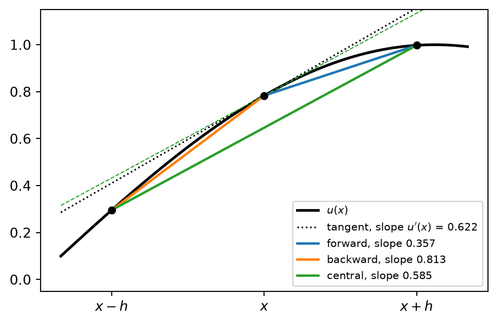
Geometrically, each difference quotient is the slope of a chord (Figure 3.2). The forward chord connects \(x\) and \(x + h\), the backward chord \(x - h\) and \(x\). Where the function curves, one of them is too flat and the other too steep, by about \(\frac{h}{2} |u''|\) each, with opposite signs: in the figure \(u'' = -\sin 0.9 = -0.78\) and \(\frac{h}{2} |u''| = 0.23\), while the slopes differ from the tangent slope 0.622 by \(-0.27\) and \(+0.19\) (the difference from 0.23 comes from the higher terms). The central chord spans the symmetric interval \([x - h, x + h]\), and the curvature tilts it in neither direction. For a parabola, where \(u''' = 0\), the error term \(-\frac{h^2}{6} u'''\) vanishes and the central chord is exactly parallel to the tangent.
3.1.4 Second derivative
Adding the two series instead cancels the odd terms (last column of the table, with the signs of \(u(x - h)\) reversed):
\[ u(x + h) + u(x - h) = 2 u(x) + h^2 u''(x) + \frac{h^4}{12} u''''(x) + \dots , \]
where \(\frac{h^4}{12} = 2 \cdot \frac{h^4}{24}\). Subtracting \(2 u(x)\) gives \(u(x + h) - 2 u(x) + u(x - h) = h^2 u''(x) + \frac{h^4}{12} u''''(x) + \dots\), and dividing by \(h^2\) and solving for \(u''(x)\) gives the standard approximation of the second derivative,
\[ u''(x) = \frac{u(x + h) - 2 u(x) + u(x - h)}{h^2} - \frac{h^2}{12} u''''(x) - \dots , \tag{3.6}\]
which is also of second order. This formula is the core of every finite difference model of diffusion.
There is a second way to obtain it, which becomes important when the diffusion coefficient varies in space. The second derivative is the derivative of the first derivative. We approximate the first derivative half-way between the grid points,
\[ u'\!\left(x + \tfrac{h}{2}\right) \approx \frac{u(x + h) - u(x)}{h}, \qquad u'\!\left(x - \tfrac{h}{2}\right) \approx \frac{u(x) - u(x - h)}{h} . \]
Seen from the point \(x + \tfrac{h}{2}\), the first quotient uses the two neighbours at distance \(\tfrac{h}{2}\) on either side: it is a central difference with step \(h/2\) and therefore of second order. The same holds for the second quotient at \(x - \tfrac{h}{2}\). We then take the central difference of these two values, again with step \(h/2\):
\[ u''(x) \approx \frac{u'\!\left(x + \tfrac{h}{2}\right) - u'\!\left(x - \tfrac{h}{2}\right)}{h} = \frac{1}{h} \left[ \frac{u(x + h) - u(x)}{h} - \frac{u(x) - u(x - h)}{h} \right] = \frac{u(x + h) - 2 u(x) + u(x - h)}{h^2} . \]
In this form the formula is a difference of two fluxes, as in the derivation of the divergence in Chapter 2.
3.1.5 Measuring the order of convergence
If the error behaves as \(e(h) \approx C h^p\), then taking the logarithm gives
\[ \log e = \log C + p \log h . \]
In a plot with logarithmic axes the error is a straight line with slope \(p\). To compute \(p\) from two step sizes \(h_1\) and \(h_2\) we divide the two errors. The unknown constant \(C\) drops out,
\[ \frac{e(h_1)}{e(h_2)} = \frac{C h_1^p}{C h_2^p} = \left( \frac{h_1}{h_2} \right)^p , \]
and taking the logarithm of both sides, \(\log \left( e(h_1) / e(h_2) \right) = p \log (h_1 / h_2)\), gives the observed order
\[ p = \frac{\log \left( e(h_1) / e(h_2) \right)}{\log \left( h_1 / h_2 \right)} . \tag{3.7}\]
If the step is halved, \(h_1 / h_2 = 2\) and \(p = \log_2 \left( e(h_1) / e(h_2) \right)\): an error that falls by a factor of 4 means second order.
Comparing the observed order with the theoretical one is the most important test of a numerical code. A bug almost always reduces the order. We test the forward and central difference with \(u = \sin\), whose derivative \(\cos\) is known, at \(x = 1\).
import numpy as np # NumPy: np.sin, np.cos, np.log, ...
x = 1.0 # point where we approximate u'(x)
exact = np.cos(x) # exact derivative of sin at x
h_list = [0.1, 0.05, 0.025, 0.0125] # step sizes, each half the previous one
error_forward = [] # empty lists, filled in the loop
error_central = []
for h in h_list: # h takes the values 0.1, 0.05, ... in turn
forward = (np.sin(x + h) - np.sin(x)) / h
central = (np.sin(x + h) - np.sin(x - h)) / (2 * h)
error_forward.append(abs(forward - exact)) # add the error to the list
error_central.append(abs(central - exact))
print(" h error forward order error central order")
for i in range(1, len(h_list)): # i = 1, 2, 3; compare step i with step i-1
log_ratio_h = np.log(h_list[i - 1] / h_list[i])
p_forward = np.log(error_forward[i - 1] / error_forward[i]) / log_ratio_h
p_central = np.log(error_central[i - 1] / error_central[i]) / log_ratio_h
print(f"{h_list[i]:7.4f} {error_forward[i]:12.2e} {p_forward:6.2f}"
f" {error_central[i]:14.2e} {p_central:6.2f}") h error forward order error central order
0.0500 2.13e-02 1.01 2.25e-04 2.00
0.0250 1.06e-02 1.01 5.63e-05 2.00
0.0125 5.27e-03 1.00 1.41e-05 2.00import numpy as np
x = 1.0
h = np.array([0.1, 0.05, 0.025, 0.0125]) # all step sizes at once
error_forward = abs((np.sin(x + h) - np.sin(x)) / h - np.cos(x))
error_central = abs((np.sin(x + h) - np.sin(x - h)) / (2 * h) - np.cos(x))
# e[:-1] is the array without its last, e[1:] without its first element
def observed_order(e, h):
return np.log(e[:-1] / e[1:]) / np.log(h[:-1] / h[1:])
print("forward, observed order:", observed_order(error_forward, h).round(3))
print("central, observed order:", observed_order(error_central, h).round(3))forward, observed order: [1.014 1.007 1.004]
central, observed order: [1.999 2. 2. ]The observed orders are 1 and 2, as derived. Moreover the forward error is close to \(\frac{h}{2} |u''(1)| = \frac{h}{2} \sin 1 \approx 0.42 \, h\), the leading term of Equation 3.3.
New Python in the step-by-step version.
[0.1, 0.05, ...]is a list,[]an empty list.error_forward.append(value)adds a value at the end of the list.for h in h_list:executes the indented lines once for each element of the list, withhequal to that element. It replaces the counter of awhileloop.range(1, len(h_list))produces the whole numbers \(1, 2, \dots\) up tolen(h_list) - 1;lenis the number of elements.h_list[i]is element numberi, counted from 0:h_list[0]is 0.1.- In
f"{h:7.4f}"the part after the colon sets the format: 7 characters wide with 4 digits after the decimal point.einstead offgives the exponential notation,1.23e-04.
TipTry it: when the order breaks down
The code runs in your browser; change it and press Run Code. It prints the errors and observed orders of the forward and central difference.
- Run it as it is: orders 1 and 2.
- Replace \(u\) by
x * np.abs(x), its derivative by2 * np.abs(x), and setx = 0.0. Which orders do you observe now, and why? - Keep this function but set
x = 0.5. What changes?
NoteWhat you should see
At \(x = 0\) both differences are of first order. The function \(x |x|\) has the derivative \(2 |x|\), which has a kink at 0, so \(u''\) jumps from \(-2\) to \(2\) and \(u'''\) does not exist there. The Taylor series behind Equation 3.5 needs a bounded \(u'''\) near \(x\); without it the \(h^2\) error term is not available. At \(x = 0.5\) the function is smooth in the neighbourhood (\(u = x^2\) there), and the central difference is second order again, in fact exact up to round-off, because \(u''' = 0\). The order of a formula is a property of the formula and of the smoothness of the function.
3.1.6 Why the step cannot be made arbitrarily small
According to Equation 3.3 the error vanishes for \(h \to 0\). On a computer it does not, and we can estimate why.
The computer does not hold \(u(x)\) and \(u(x + h)\) but rounded values \(u(x)(1 + \delta_1)\) and \(u(x + h)(1 + \delta_2)\) with \(|\delta_{1,2}| \le \varepsilon\), the machine epsilon (Chapter 1). The computed numerator is
\[ u(x + h)(1 + \delta_2) - u(x)(1 + \delta_1) = \big[ u(x + h) - u(x) \big] + u(x + h) \, \delta_2 - u(x) \, \delta_1 , \]
so it differs from the exact numerator by
\[ |u(x + h) \, \delta_2 - u(x) \, \delta_1| \le \varepsilon \, \big( |u(x + h)| + |u(x)| \big) \approx 2 \varepsilon |u| , \]
where we used \(u(x + h) \approx u(x)\) for small \(h\) and wrote \(|u|\) for \(|u(x)|\). The division by \(h\) is itself accurate to \(\varepsilon\), but it turns this absolute error of the numerator into an error of \(2 \varepsilon |u| / h\) in the difference quotient: the smaller \(h\), the larger the error. Together with the leading truncation error from Equation 3.3 the total error of the forward difference is bounded by
\[ e(h) = \underbrace{\frac{h}{2} |u''|}_{\text{truncation}} + \underbrace{\frac{2 \varepsilon |u|}{h}}_{\text{round-off}} . \tag{3.8}\]
The first term decreases with \(h\), the second increases. The minimum is where the derivative with respect to \(h\) vanishes:
\[ \frac{\mathrm{d}e}{\mathrm{d}h} = \frac{|u''|}{2} - \frac{2 \varepsilon |u|}{h^2} = 0 \quad \Longrightarrow \quad h^2 = \frac{4 \varepsilon |u|}{|u''|} \quad \Longrightarrow \quad h_{\text{opt}} = 2 \sqrt{\frac{\varepsilon |u|}{|u''|}} . \]
Inserting \(h_{\text{opt}}\) into Equation 3.8, both terms become equal,
\[ \frac{h_{\text{opt}}}{2} |u''| = \sqrt{\frac{\varepsilon |u|}{|u''|}} \, |u''| = \sqrt{\varepsilon |u| |u''|}, \qquad \frac{2 \varepsilon |u|}{h_{\text{opt}}} = \varepsilon |u| \sqrt{\frac{|u''|}{\varepsilon |u|}} = \sqrt{\varepsilon |u| |u''|}, \]
and the smallest error is their sum,
\[ e(h_{\text{opt}}) = 2 \sqrt{\varepsilon \, |u| \, |u''|} . \]
If \(u\) and \(u''\) are of order one, the best step is of the order \(\sqrt{\varepsilon} \approx 10^{-8}\), and the smallest error that can be reached is also about \(10^{-8}\): half of the 16 digits are lost.
For the central difference the numerator has the same round-off error \(2 \varepsilon |u|\), but it is divided by \(2h\), which gives \(\varepsilon |u| / h\). With the truncation error \(\frac{h^2}{6} |u'''|\) from Equation 3.5,
\[ e(h) = \frac{h^2}{6} |u'''| + \frac{\varepsilon |u|}{h}, \qquad \frac{\mathrm{d}e}{\mathrm{d}h} = \frac{h}{3} |u'''| - \frac{\varepsilon |u|}{h^2} = 0 \quad \Longrightarrow \quad h_{\text{opt}} = \left( \frac{3 \varepsilon |u|}{|u'''|} \right)^{1/3} . \]
At \(h_{\text{opt}}\) we have \(\varepsilon |u| = \frac13 h_{\text{opt}}^3 |u'''|\), so the round-off term is \(\frac13 h_{\text{opt}}^2 |u'''|\), twice the truncation term, and
\[ e(h_{\text{opt}}) = \frac{h_{\text{opt}}^2}{6} |u'''| + \frac{h_{\text{opt}}^2}{3} |u'''| = \frac{h_{\text{opt}}^2}{2} |u'''| . \]
For \(u\) and \(u'''\) of order one, \(h_{\text{opt}} \sim \varepsilon^{1/3} \approx 10^{-5}\) and \(e(h_{\text{opt}}) \sim \varepsilon^{2/3} \approx 10^{-11}\).
import matplotlib.pyplot as plt # the plotting library
x = 1.0
exact = np.cos(x)
h_values = [] # step sizes
error_forward = [] # errors of the two formulas
error_central = []
slope_1 = [] # reference lines h/2 and h^2/6
slope_2 = []
for k in range(60): # k = 0, 1, ..., 59
h = 10.0 ** (-15 + 0.25 * k) # h = 10^-15, 10^-14.75, ..., 10^-0.25
forward = (np.sin(x + h) - np.sin(x)) / h
central = (np.sin(x + h) - np.sin(x - h)) / (2 * h)
h_values.append(h)
error_forward.append(abs(forward - exact))
error_central.append(abs(central - exact))
slope_1.append(h / 2)
slope_2.append(h**2 / 6)
fig, ax = plt.subplots(figsize=(6, 3.8)) # a figure with one set of axes
ax.loglog(h_values, error_forward, ".", label="forward difference")
ax.loglog(h_values, error_central, ".", label="central difference")
ax.loglog(h_values, slope_1, "k--", lw=0.8, label="slope 1 and 2")
ax.loglog(h_values, slope_2, "k--", lw=0.8)
ax.set_ylim(1e-13, 1) # show errors between 1e-13 and 1
ax.set_xlabel("$h$")
ax.set_ylabel("error")
ax.legend() # the box with the labels
plt.show()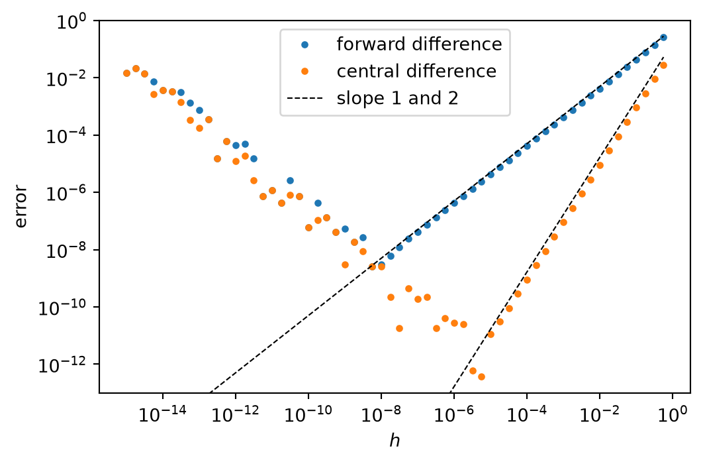
import matplotlib.pyplot as plt
h = 10.0 ** np.arange(-15, 0, 0.25) # all 60 step sizes as one array
forward = abs((np.sin(x + h) - np.sin(x)) / h - np.cos(x))
central = abs((np.sin(x + h) - np.sin(x - h)) / (2 * h) - np.cos(x))
fig, ax = plt.subplots(figsize=(6, 3.8))
ax.loglog(h, forward, ".", label="forward difference")
ax.loglog(h, central, ".", label="central difference")
ax.loglog(h, h / 2, "k--", lw=0.8, label="slope 1 and 2")
ax.loglog(h, h**2 / 6, "k--", lw=0.8)
ax.set(ylim=(1e-13, 1), xlabel="$h$", ylabel="error")
ax.legend()
plt.show()The exponents are computed from the integer counter k, as in the time loop of Exercise 1, instead of adding 0.25 repeatedly. ax.loglog plots with logarithmic axes; "." draws dots, "k--" a black (k) dashed line, lw is the line width.
Figure 3.3 confirms the estimates: the error of the forward difference stops decreasing near \(h = 10^{-8}\), at about \(10^{-8}\), that of the central difference near \(h = 10^{-5}\), at about \(10^{-11}\). Single points can lie lower, where the rounding errors happen to cancel; the estimates are bounds for the typical error. Left of the optimum the error grows like \(1/h\) and scatters, because the rounding errors \(\delta_1\), \(\delta_2\) vary irregularly from one \(h\) to the next. The figure has two lessons. First, a higher order gives a smaller error for the same step and is less affected by round-off. Second, in a convergence test the step must be neither so large that higher-order terms disturb the slope nor so small that round-off dominates.
3.1.7 Stencils
The points used by a difference formula form its stencil. Figure 3.4 collects the stencils of this unit, together with two that are not derived here. All of them follow from the same idea: combine Taylor series so that the unwanted terms cancel. For a given stencil and derivative, the weights are the solution of a small linear system (Fornberg 1988).
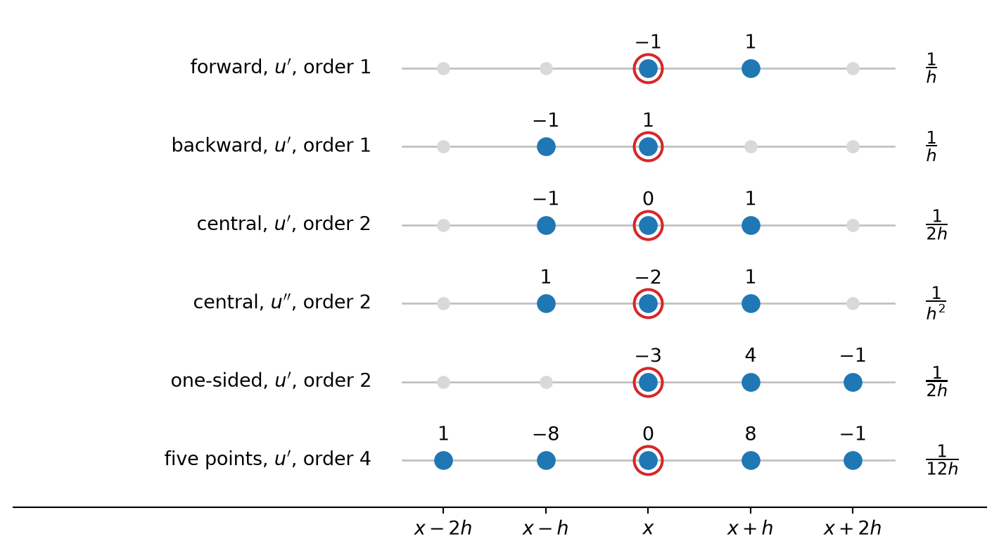
The one-sided formula is needed at a boundary. There the central difference would use a point outside the domain, where the model computes no value: below the ground there is no air temperature. The derivative at the boundary is needed for fluxes through it, such as the heat flux \(-k \, \partial T / \partial z\) into the ground, and for Neumann boundary conditions. The forward difference uses only points inside, but it is of first order and can reduce the accuracy of an otherwise second-order model. One more point, \(x + 2h\), gives second order,
\[ u'(x) = \frac{-3 u(x) + 4 u(x + h) - u(x + 2h)}{2h} + \frac{h^2}{3} u'''(x) + \dots , \]
with an error constant twice that of the central difference. Problem 2 of exercise sheet 3 derives it. Models often use instead a ghost point outside the domain, whose value is set by the boundary condition (Chapter 9). The five-point formula cancels one more pair of terms than the central difference and is of fourth order; it returns in Chapter 4.
In the next unit the stencil is written down at every grid point. Each stencil then becomes one row of a matrix, and the \(1, -2, 1\) stencil of the second derivative becomes the most important matrix of this lecture.
3.2 Interpolation
Interpolation constructs a function that passes through given data points \((x_j, u_j)\). Models need it all the time: to obtain a value between grid points, to transfer fields between different grids, to find the value at the departure point of an air parcel (Chapter 14).
3.2.1 Linear interpolation
Between two neighbours \(x_j\) and \(x_{j+1} = x_j + h\) the straight line through the two data points is
\[ p(x) = u_j + \frac{u_{j+1} - u_j}{h} (x - x_j) . \tag{3.9}\]
At \(x = x_j\) it gives \(u_j\), at \(x = x_{j+1}\) it gives \(u_j + (u_{j+1} - u_j) = u_{j+1}\). The special case at the midpoint, \(x - x_j = h/2\), is the average \(\tfrac12 (u_j + u_{j+1})\), which is used whenever a value is needed half-way between grid points.
How large is the error? For a polynomial \(p\) of degree \(n\) through \(n + 1\) points \(x_0, \dots, x_n\) the interpolation error is
\[ u(x) - p(x) = \frac{u^{(n+1)}(\xi)}{(n + 1)!} \prod_{j=0}^{n} (x - x_j) \tag{3.10}\]
for some \(\xi\) in the interval that contains \(x\) and the data points. The symbol \(\prod\) (capital pi) denotes a product, in the same way as \(\sum\) denotes a sum:
\[ \prod_{j=0}^{n} (x - x_j) = (x - x_0)(x - x_1) \cdots (x - x_n) , \]
with one factor for each data point; for \(n = 1\) it is \((x - x_0)(x - x_1)\). The Greek letter \(\xi\) (xi) stands for a point whose existence the derivation guarantees but whose position it does not determine, as in the Lagrange remainder of the Taylor series. It depends on \(x\). In estimates we therefore replace \(|u^{(n+1)}(\xi)|\) by its largest value on the interval, \(\max |u^{(n+1)}|\).
NoteDerivation of the interpolation error
At a data point both sides are zero. Fix an \(x\) that is not a data point and write \(w(t) = \prod_{j=0}^{n} (t - x_j)\), a polynomial of degree \(n + 1\) with leading term \(t^{n+1}\). The function
\[ g(t) = u(t) - p(t) - \frac{u(x) - p(x)}{w(x)} \, w(t) \]
is zero at the \(n + 1\) data points, because there \(u = p\) and \(w = 0\), and also at \(t = x\), where the last term equals \(u(x) - p(x)\). It has \(n + 2\) zeros. Between two zeros of a smooth function its derivative has a zero (Rolle’s theorem). Hence \(g'\) has at least \(n + 1\) zeros, \(g''\) at least \(n\), and \(g^{(n+1)}\) at least one, at some point \(\xi\). Now \(p^{(n+1)} = 0\), because \(p\) has degree \(n\), and \(w^{(n+1)} = (n + 1)!\), because only the leading term \(t^{n+1}\) survives \(n + 1\) differentiations. Therefore
\[ 0 = g^{(n+1)}(\xi) = u^{(n+1)}(\xi) - \frac{u(x) - p(x)}{w(x)} \, (n + 1)! , \]
which, solved for \(u(x) - p(x)\), is Equation 3.10.
For the straight line, \(n = 1\), the error is \(\tfrac12 u''(\xi) \, (x - x_j)(x - x_{j+1})\). Writing \(t = x - x_j\), the product is \(t \, (t - h)\) for \(0 \le t \le h\). Its derivative \(2t - h\) vanishes at \(t = h/2\), the midpoint, where the product equals \(\tfrac{h}{2} \cdot \left( -\tfrac{h}{2} \right) = -\tfrac{h^2}{4}\). Hence
\[ |u(x) - p(x)| \le \frac12 \cdot \frac{h^2}{4} \max |u''| = \frac{h^2}{8} \max |u''| . \]
Linear interpolation is of second order, and it is exact where the function has no curvature.
3.2.2 Polynomials of high degree and the Runge phenomenon
Polynomial interpolation passes a single polynomial of degree \(n\) through \(n + 1\) points. It can be written down directly in the Lagrange form
\[ p(x) = \sum_{j=0}^{n} u_j \, L_j(x), \qquad L_j(x) = \prod_{i \ne j} \frac{x - x_i}{x_j - x_i} . \]
Each \(L_j\) is a product of \(n\) linear factors, a polynomial of degree \(n\). At \(x = x_j\) every factor equals one, so \(L_j(x_j) = 1\). At any other data point \(x_i\) the factor \((x - x_i)\) is zero, so \(L_j(x_i) = 0\). In the sum for \(p(x_i)\) therefore only the term \(j = i\) survives, and \(p(x_i) = u_i\). For \(n = 1\) the Lagrange form is \(p(x) = u_0 \frac{x - x_1}{x_0 - x_1} + u_1 \frac{x - x_0}{x_1 - x_0}\), which is Equation 3.9 written differently.
From Equation 3.10 one would expect the accuracy to improve with \(n\), because of the factor \(1 / (n + 1)!\). On equidistant points it does not. The product \(\prod (x - x_j)\) is much larger near the ends of the interval than in the middle, and for many functions the derivatives \(u^{(n+1)}\) grow faster than the factorial. The polynomial oscillates near the ends, and the oscillations grow with \(n\). This is the Runge phenomenon.
There are two remedies. Piecewise interpolation uses polynomials of low degree between neighbouring points. Cubic splines are piecewise cubic polynomials that in addition make the first and second derivative continuous at the data points. Alternatively, the data points can be placed more densely near the ends, for example at the Chebyshev points \(x_j = \cos(j \pi / n)\); this keeps the product \(\prod (x - x_j)\) small everywhere. Models rarely have this freedom: the grid is given.
from scipy.interpolate import CubicSpline # cubic splines from SciPy
def runge(x):
return 1 / (1 + 25 * x**2)
def lagrange(x_data, u_data, x):
# value at x of the polynomial through the points (x_data, u_data)
n_points = len(x_data)
p = 0.0
for j in range(n_points):
L = 1.0 # L_j(x), built up factor by factor
for i in range(n_points):
if i != j: # != means "not equal"
L = L * (x - x_data[i]) / (x_data[j] - x_data[i])
p = p + u_data[j] * L
return p
x_data = [] # 11 equidistant data points in [-1, 1]
u_data = []
for j in range(11):
x_data.append(-1 + 0.2 * j)
u_data.append(runge(-1 + 0.2 * j))
spline = CubicSpline(x_data, u_data) # the spline through the data
x_fine = [] # 401 points for drawing the curves
u_exact = []
u_polynomial = []
u_spline = []
for k in range(401):
x = -1 + 0.005 * k
x_fine.append(x)
u_exact.append(runge(x))
u_polynomial.append(lagrange(x_data, u_data, x))
u_spline.append(spline(x))
fig, ax = plt.subplots(figsize=(6, 3.5))
ax.plot(x_fine, u_exact, "k", label="function")
ax.plot(x_fine, u_polynomial, label="polynomial, degree 10")
ax.plot(x_fine, u_spline, "--", label="cubic spline")
ax.plot(x_data, u_data, "ko", ms=4) # data points as black circles
ax.set_xlabel("$x$")
ax.legend()
plt.show()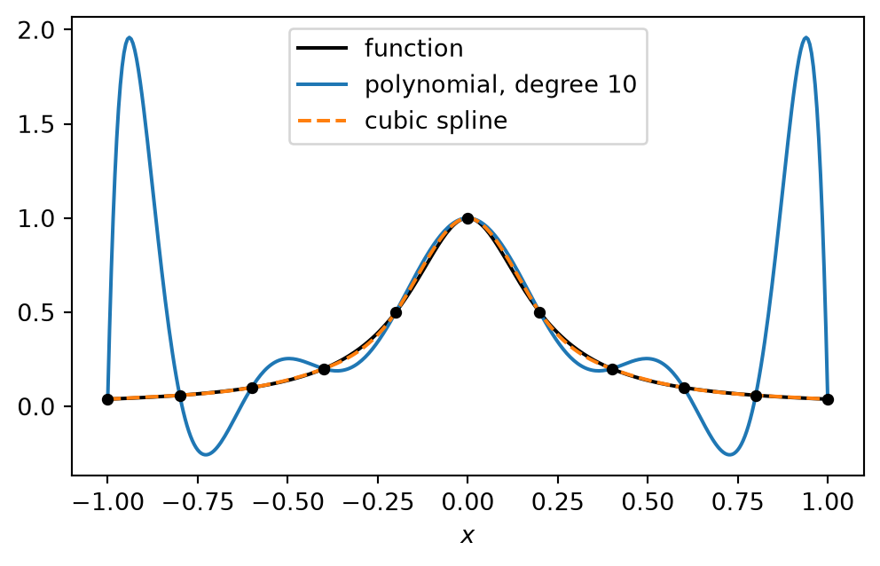
from scipy.interpolate import BarycentricInterpolator, CubicSpline
runge = lambda x: 1 / (1 + 25 * x**2) # a function in one line
x_data = np.linspace(-1, 1, 11) # 11 equidistant points
x_fine = np.linspace(-1, 1, 401)
polynomial = BarycentricInterpolator(x_data, runge(x_data))
spline = CubicSpline(x_data, runge(x_data))
fig, ax = plt.subplots(figsize=(6, 3.5))
ax.plot(x_fine, runge(x_fine), "k", label="function")
ax.plot(x_fine, polynomial(x_fine), label="polynomial, degree 10")
ax.plot(x_fine, spline(x_fine), "--", label="cubic spline")
ax.plot(x_data, runge(x_data), "ko", ms=4)
ax.set_xlabel("$x$")
ax.legend()
plt.show()The step-by-step function lagrange is a direct transcription of the Lagrange form.
New Python. def name(arguments): defines a function: the indented lines are executed when the function is called, and return hands back the result. The two for loops in lagrange are nested: for each j the inner loop runs through all i. The cubic spline requires solving a linear system for the second derivatives at the data points; we take it from the library SciPy. CubicSpline(x_data, u_data) returns an object that can be called like a function. The compact version uses BarycentricInterpolator, a numerically more stable way to evaluate the same polynomial.
The lesson reaches beyond interpolation. Accuracy is improved reliably by refining the grid with a method of fixed, moderate order. Raising the order on a fixed grid works only under special conditions (Chapter 20).
TipTry it: more points, better fit?
- Increase
nfrom 10 to 14 and then to 20. What happens to the largest error? - Set
chebyshev = Trueand repeat. What changes?
NoteWhat you should see
On equidistant points the largest error grows with \(n\): about 1.9 for \(n = 10\), about 7 for \(n = 14\) and about 60 for \(n = 20\); the oscillations near the ends grow. On Chebyshev points, which lie more densely near the ends, the error decreases with \(n\), to about 0.1 for \(n = 10\) and a few hundredths for \(n = 20\). The function is the same; only the positions of the data points differ.
3.3 Quadrature
Quadrature approximates an integral by a weighted sum of function values. The interval \([a, b]\) is divided into \(N\) subintervals of width \(h = (b - a)/N\), and on each the integrand is replaced by a polynomial.
3.3.1 Midpoint and trapezoidal rule
Consider one subinterval of width \(h\) with midpoint \(m\). We expand the integrand around the midpoint, \(f(m + s) = f(m) + s f'(m) + \tfrac12 s^2 f''(m) + \tfrac16 s^3 f'''(m) + \dots\), and integrate term by term from \(s = -h/2\) to \(s = h/2\). The terms with odd powers of \(s\) are odd functions and integrate to zero over the symmetric interval. For the others,
\[ \int_{-h/2}^{h/2} 1 \, \mathrm{d}s = h, \qquad \int_{-h/2}^{h/2} s^2 \, \mathrm{d}s = \left[ \frac{s^3}{3} \right]_{-h/2}^{h/2} = \frac{2}{3} \left( \frac{h}{2} \right)^3 = \frac{h^3}{12} . \]
Hence
\[ \int_{m - h/2}^{m + h/2} f(x) \, \mathrm{d}x = h \, f(m) + \frac{f''(m)}{2} \cdot \frac{h^3}{12} + O(h^5) = \underbrace{h \, f(m)}_{\text{midpoint rule}} + \frac{h^3}{24} f''(m) + O(h^5) . \tag{3.11}\]
The trapezoidal rule uses the two end points instead. From the same expansion at \(s = \pm h/2\), \(f(m \pm \tfrac{h}{2}) = f(m) \pm \tfrac{h}{2} f'(m) + \tfrac{h^2}{8} f''(m) \pm \dots\), so that in the sum of the two the \(f'\) terms cancel:
\[ f\!\left(m - \tfrac{h}{2}\right) + f\!\left(m + \tfrac{h}{2}\right) = 2 f(m) + \frac{h^2}{4} f''(m) + O(h^4), \]
and
\[ \frac{h}{2} \left[ f\!\left(m - \tfrac{h}{2}\right) + f\!\left(m + \tfrac{h}{2}\right) \right] = h \, f(m) + \frac{h^3}{8} f''(m) + O(h^5) . \]
We replace \(h f(m)\) with Equation 3.11, \(h f(m) = \int f \, \mathrm{d}x - \tfrac{h^3}{24} f''(m)\):
\[ \frac{h}{2} \left[ \dots \right] = \int f \, \mathrm{d}x - \frac{h^3}{24} f''(m) + \frac{h^3}{8} f''(m) = \int f \, \mathrm{d}x + \frac{h^3}{12} f''(m) , \]
since \(\tfrac18 - \tfrac1{24} = \tfrac{3 - 1}{24} = \tfrac1{12}\). Solved for the integral,
\[ \int_{m - h/2}^{m + h/2} f(x) \, \mathrm{d}x = \underbrace{\frac{h}{2} \left[ f\!\left(m - \tfrac{h}{2}\right) + f\!\left(m + \tfrac{h}{2}\right) \right]}_{\text{trapezoidal rule}} - \frac{h^3}{12} f''(m) + O(h^5) . \tag{3.12}\]
Composite rules. On the whole interval we sum over the \(N\) subintervals with midpoints \(m_i = a + (i + \tfrac12) h\), \(i = 0, \dots, N - 1\), and end points \(x_i = a + i h\), \(i = 0, \dots, N\). The composite midpoint rule is \(h \sum_i f(m_i)\). In the composite trapezoidal rule every interior point \(x_1, \dots, x_{N-1}\) is the end point of two subintervals and appears twice with the weight \(h/2\):
\[ T_N = h \left[ \tfrac12 f(x_0) + f(x_1) + \dots + f(x_{N-1}) + \tfrac12 f(x_N) \right] . \]
The local errors add up. For the midpoint rule
\[ \sum_{i=0}^{N-1} \frac{h^3}{24} f''(m_i) = \frac{h^2}{24} \sum_{i=0}^{N-1} h \, f''(m_i) \approx \frac{h^2}{24} \int_a^b f''(x) \, \mathrm{d}x = \frac{h^2}{24} \big[ f'(b) - f'(a) \big] , \]
because \(\sum_i h f''(m_i)\) is itself the midpoint rule for \(\int f''\). The same argument for the trapezoidal rule gives \(-\tfrac{h^2}{12} \big[ f'(b) - f'(a) \big]\). Each subinterval contributes \(O(h^3)\), but there are \(N = (b - a)/h\) of them, so the composite error is \(O(h^2)\): both composite rules are of second order. The error of the trapezoidal rule is twice that of the midpoint rule and has the opposite sign.
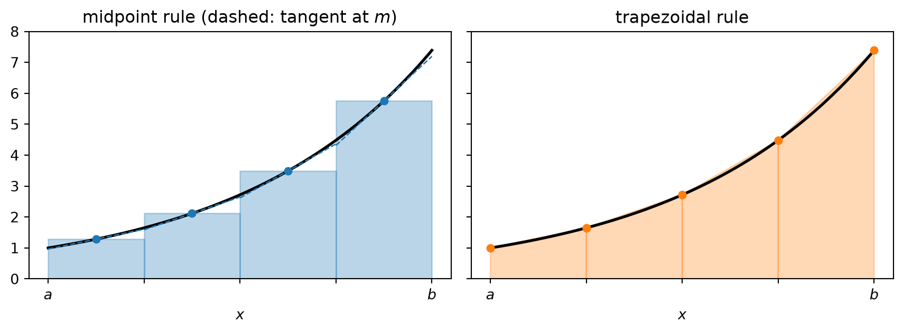
Figure 3.6 shows the signs of the two errors for a convex function, \(f'' > 0\). The trapezoids lie above the curve, because a chord of a convex function lies above it: the trapezoidal rule is too large, in agreement with \(\int f \, \mathrm{d}x - \text{trapezoidal} = -\frac{h^3}{12} f'' < 0\). For the midpoint rule, consider the tangent at the midpoint, \(t(m + s) = f(m) + s \, f'(m)\). Its integral over the subinterval is
\[ \int_{-h/2}^{h/2} \big( f(m) + s \, f'(m) \big) \, \mathrm{d}s = h \, f(m) + f'(m) \left[ \frac{s^2}{2} \right]_{-h/2}^{h/2} = h \, f(m) + f'(m) \left( \frac{h^2}{8} - \frac{h^2}{8} \right) = h \, f(m) : \]
the rectangle has the same area as the trapezoid under the tangent. A tangent of a convex function lies below it, so the midpoint rule is too small, in agreement with \(\int f \, \mathrm{d}x - h f(m) = +\frac{h^3}{24} f'' > 0\).
The composite error depends only on the derivative of \(f\) at the two end points. If \(f\) is periodic and the interval is one period, \(f'(b) = f'(a)\) and the \(h^2\) term vanishes. A more complete analysis (the Euler–Maclaurin formula) shows that the same holds for all higher terms, which contain \(f'''(b) - f'''(a)\), \(f^{(5)}(b) - f^{(5)}(a)\), and so on. For smooth periodic functions the trapezoidal rule is therefore extremely accurate.
3.3.2 Simpson’s rule
Opposite signs again invite a combination. Taking two thirds of Equation 3.11 and one third of Equation 3.12,
\[ \tfrac23 \left( \int f - \tfrac{h^3}{24} f'' \right) + \tfrac13 \left( \int f + \tfrac{h^3}{12} f'' \right) = \int f + \left( -\tfrac{2}{72} + \tfrac{1}{36} \right) h^3 f'' = \int f , \]
the \(h^3\) terms cancel. In function values, the combination is
\[ \tfrac23 h \, f(m) + \tfrac13 \cdot \tfrac{h}{2} \left[ f\!\left(m - \tfrac{h}{2}\right) + f\!\left(m + \tfrac{h}{2}\right) \right] = \frac{h}{6} \left[ f\!\left(m - \tfrac{h}{2}\right) + 4 f(m) + f\!\left(m + \tfrac{h}{2}\right) \right] , \]
which is Simpson’s rule:
\[ \int_{m - h/2}^{m + h/2} f(x) \, \mathrm{d}x \approx \frac{h}{6} \left[ f\!\left(m - \tfrac{h}{2}\right) + 4 f(m) + f\!\left(m + \tfrac{h}{2}\right) \right] . \]
The next terms of both rules are odd powers of \(s\), which vanish, and terms with \(h^5\). The local error of Simpson’s rule is therefore \(O(h^5)\), and its composite form is of fourth order. Many textbooks write Simpson’s rule with the distance \(\hat h = h/2\) between neighbouring points, \(\tfrac{\hat h}{3} [f_0 + 4 f_1 + f_2]\); this is the same formula.
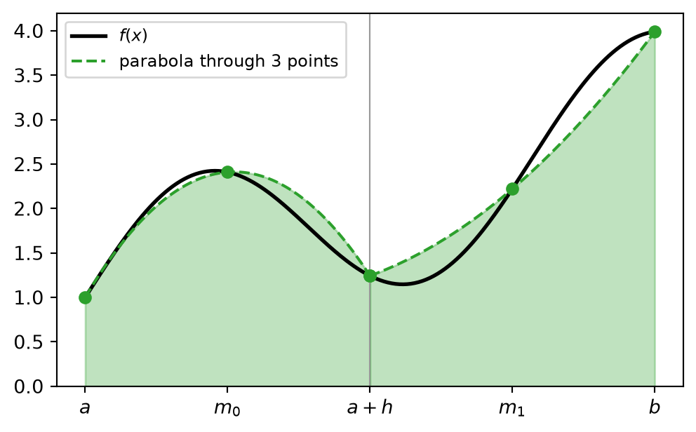
Simpson’s rule also has a geometric meaning (Figure 3.7): on each subinterval it is the exact integral of the parabola \(p\) through the three points \(m - \tfrac{h}{2}\), \(m\), \(m + \tfrac{h}{2}\). To see this, we use what the derivation above shows. Its error terms contain only \(f''''\) and higher derivatives, because the terms with \(f''\) cancel and those with odd derivatives integrate to zero. For a polynomial of degree at most three all these derivatives are zero, so Simpson’s rule integrates such polynomials exactly. The parabola \(p\) has degree two, hence Simpson’s rule applied to \(p\) gives \(\int p \, \mathrm{d}x\). Simpson’s rule uses only the three values \(f(m - \tfrac{h}{2})\), \(f(m)\) and \(f(m + \tfrac{h}{2})\), and there \(p = f\). Applied to \(f\) it therefore gives the same number as applied to \(p\), namely \(\int p \, \mathrm{d}x\). In the figure the parabola follows \(f\) closely on the first subinterval and differs visibly on the second. Smaller subintervals reduce the difference.
| Rule | On one subinterval | Error of the composite rule |
|---|---|---|
| Midpoint | \(h \, f(m)\) | \(O(h^2)\) |
| Trapezoidal | \(\tfrac{h}{2} \left[ f(m - \tfrac{h}{2}) + f(m + \tfrac{h}{2}) \right]\) | \(O(h^2)\) |
| Simpson | \(\tfrac{h}{6} \left[ f(m - \tfrac{h}{2}) + 4 f(m) + f(m + \tfrac{h}{2}) \right]\) | \(O(h^4)\) |
We test the three rules on \(\int_0^1 e^x \, \mathrm{d}x = e - 1\) with \(N = 4, 8, 16, 32\). Since \(N\) doubles, \(h\) halves, and the observed order is \(\log_2\) of the ratio of successive errors.
def midpoint(f, a, b, n):
h = (b - a) / n # width of a subinterval
total = 0.0
for i in range(n): # subintervals i = 0, ..., n-1
m = a + (i + 0.5) * h # midpoint of subinterval i
total = total + f(m)
return h * total
def trapezoidal(f, a, b, n):
h = (b - a) / n
total = 0.5 * f(a) + 0.5 * f(b) # the two end points count half
for i in range(1, n): # interior points i = 1, ..., n-1
total = total + f(a + i * h)
return h * total
def simpson(f, a, b, n):
return (2 * midpoint(f, a, b, n) + trapezoidal(f, a, b, n)) / 3
exact = np.e - 1 # integral of exp(x) from 0 to 1
n_list = [4, 8, 16, 32]
error_m = []
error_t = []
error_s = []
for n in n_list:
error_m.append(abs(midpoint(np.exp, 0, 1, n) - exact))
error_t.append(abs(trapezoidal(np.exp, 0, 1, n) - exact))
error_s.append(abs(simpson(np.exp, 0, 1, n) - exact))
print(" N midpoint order trapezoid order Simpson order")
for i in range(1, len(n_list)):
p_m = np.log2(error_m[i - 1] / error_m[i]) # h halved: order = log2(ratio)
p_t = np.log2(error_t[i - 1] / error_t[i])
p_s = np.log2(error_s[i - 1] / error_s[i])
print(f"{n_list[i]:2d} {error_m[i]:9.2e} {p_m:5.2f}",
f"{error_t[i]:9.2e} {p_t:5.2f} {error_s[i]:9.2e} {p_s:5.2f}")
ratio = error_t[-1] / error_m[-1]
print("error trapezoidal / error midpoint for N = 32:", round(ratio, 3)) N midpoint order trapezoid order Simpson order
8 1.12e-03 2.00 2.24e-03 2.00 1.46e-07 4.00
16 2.80e-04 2.00 5.59e-04 2.00 9.10e-09 4.00
32 6.99e-05 2.00 1.40e-04 2.00 5.69e-10 4.00
error trapezoidal / error midpoint for N = 32: 2.0def midpoint(f, a, b, n):
h = (b - a) / n
return h * np.sum(f(a + h * (np.arange(n) + 0.5))) # all midpoints at once
def trapezoidal(f, a, b, n):
x = np.linspace(a, b, n + 1) # all n+1 end points
return (b - a) / n * (0.5 * f(x[0]) + np.sum(f(x[1:-1])) + 0.5 * f(x[-1]))
def simpson(f, a, b, n):
return (2 * midpoint(f, a, b, n) + trapezoidal(f, a, b, n)) / 3
n = np.array([4, 8, 16, 32])
for rule in [midpoint, trapezoidal, simpson]:
errors = np.array([abs(rule(np.exp, 0, 1, k) - np.e + 1) for k in n])
print(f"{rule.__name__:12s} error for N = 32: {errors[-1]:.2e},"
f" observed order: {np.log2(errors[:-1] / errors[1:]).round(2)}")midpoint error for N = 32: 6.99e-05, observed order: [2. 2. 2.]
trapezoidal error for N = 32: 1.40e-04, observed order: [2. 2. 2.]
simpson error for N = 32: 5.69e-10, observed order: [4. 4. 4.]The output confirms the orders, and also that the trapezoidal error is twice the midpoint error. A function can be handed to another function like a number: midpoint(np.exp, 0, 1, n) integrates np.exp, and inside midpoint it is called as f(m). np.log2 is the logarithm to base 2, and error_t[-1] is the last element of the list.
3.3.3 Where quadrature enters prognostic models
- Time stepping. Integrating \(\mathrm{d}u / \mathrm{d}t = f(t, u)\) over one time step gives \(u(t + \Delta t) = u(t) + \int_t^{t + \Delta t} f \, \mathrm{d}t\). Every time stepping scheme is a quadrature rule for this integral. Evaluating \(f\) only at the start of the step, \(\int \approx \Delta t \, f(t, u(t))\) (the left rectangle rule, of first order), gives the forward Euler scheme Equation 1.5; the trapezoidal rule gives a scheme of second order (Chapter 5).
- Finite volumes. The fluxes through the faces of a grid cell and the sources inside it are integrals (Chapter 9).
- Finite elements. The entries of the system matrix are integrals over elements, evaluated with Gauss quadrature, which chooses the positions of the points as well as the weights (Chapter 19).
3.4 Root finding
Many steps of a model require the solution of a nonlinear equation \(f(x) = 0\): every step of an implicit time stepping scheme for a nonlinear problem, the saturation temperature of an air parcel, the water table in a soil column.
As an example we take the temperature of the ground surface on a sunny day. The surface absorbs the radiation \(Q\), solar plus the longwave radiation from the atmosphere, and loses energy in two ways: it emits longwave radiation \(\sigma T^4\) (Stefan–Boltzmann law, for a black body), and it heats the air above it by the sensible heat flux \(h (T - T_a)\), which is proportional to the difference between the surface temperature \(T\) and the air temperature \(T_a\). The surface temperature adjusts until the energy going out equals the energy coming in:
\[ \sigma T^4 + h \, (T - T_a) = Q . \]
We neglect the evaporation and the heat flux into the soil, as for dry, bare ground. With the Stefan–Boltzmann constant \(\sigma = 5.67 \cdot 10^{-8}\) W m-2 K-4, a transfer coefficient \(h = 10\) W m-2 K-1 for a light wind, \(T_a = 288\) K and \(Q = 990\) W m-2 (800 W m-2 of sunshine of which 80 % are absorbed, plus 350 W m-2 from the atmosphere), we seek the root of
\[ f(T) = \sigma T^4 + h \, (T - T_a) - Q = 0 . \tag{3.13}\]
The equation is of fourth degree in \(T\). A formula for the roots exists but is so long that nobody uses it, and in a land surface model the equation becomes more complicated as soon as evaporation and soil heat flux are added. Such equations are solved iteratively, in every grid cell and every time step.
A root finder needs to know where to look. The physics gives an interval that must contain the root:
- At \(T = T_a\) the sensible heat flux is zero, and the emission \(\sigma T_a^4 = 390\) W m-2 is less than \(Q\): \(f(T_a) = -600 < 0\). The surface takes in more than it gives off, so it is warmer than the air.
- At \(T = T_a + Q/h = 387\) K the sensible heat flux alone equals \(Q\), and the emission comes on top: \(f(T_a + Q/h) = \sigma T^4 > 0\). Here the surface gives off too much.
Since \(f\) is continuous and changes sign, it has a root between 288 K and 387 K. Figure 3.8 shows both sides of the balance and \(f\).
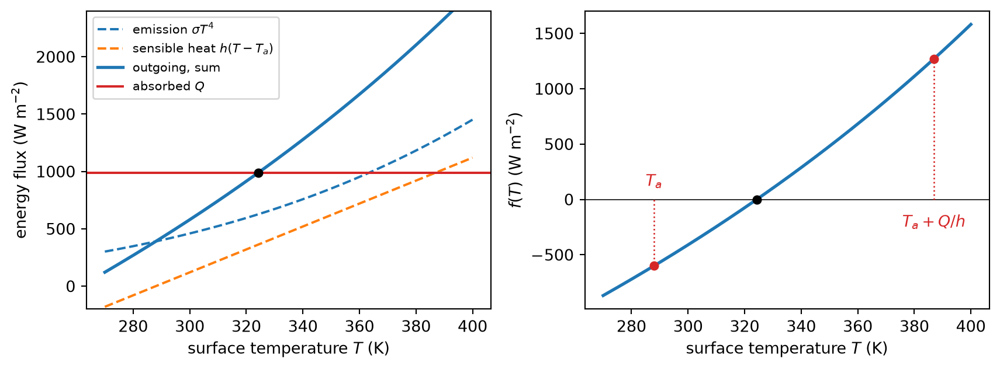
The root is at about 324 K, 51 °C, a realistic value for dry ground at noon. The left panel also shows that the root is unique: the outgoing energy grows with \(T\), so it equals \(Q\) only once. Newton’s method below also needs the derivative,
\[ f'(T) = 4 \sigma T^3 + h , \]
which is positive for every \(T > 0\), as the picture suggests.
3.4.1 Bisection
If \(f\) is continuous and \(f(a)\) and \(f(b)\) have opposite signs, there is a root in \([a, b]\) (intermediate value theorem). Bisection evaluates \(f\) at the midpoint \(c = (a + b)/2\). If \(f(a)\) and \(f(c)\) have opposite signs, the root lies in \([a, c]\), otherwise in \([c, b]\), and the method continues with that half.
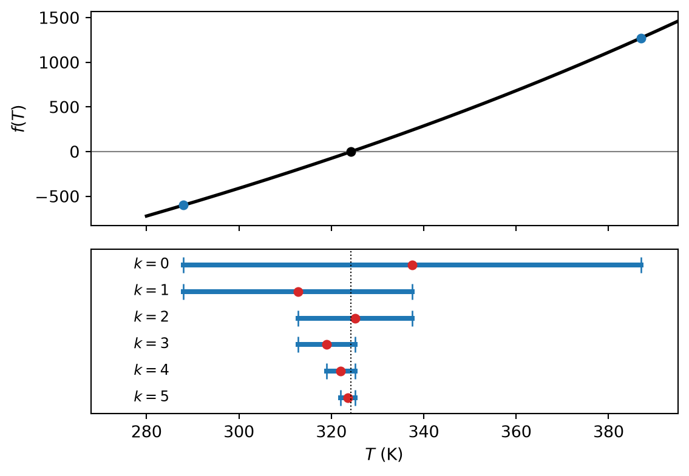
Figure 3.9 shows the first six intervals for our example. In the first iteration \(f(c) > 0\) at the midpoint \(c = 337.5\) K, the same sign as \(f(b)\), so the root lies in the left half \([288, 337.5]\). At the next midpoint, 312.75 K, \(f < 0\), so the root lies in the right half; and so on.
After \(k\) iterations the interval that contains the root has the length \((b - a)/2^k\). Its midpoint, our estimate, is at most half of this length away from the root:
\[ e_k \le \frac{b - a}{2^{k+1}} . \]
To reach a tolerance \(\tau\) we need \((b - a)/2^{k+1} \le \tau\), that is \(2^{k+1} \ge (b - a)/\tau\), or after taking the logarithm to base 2,
\[ k \ge \log_2 \frac{b - a}{\tau} - 1 . \]
For \(b - a = 99\) K and \(\tau = 10^{-12}\) K this is \(k \ge 46.5 - 1\), that is 46 iterations. Each iteration gains one binary digit, and \(\log_2 10 \approx 3.3\) iterations gain one decimal digit. This is linear convergence: the error bound is multiplied by a fixed factor, here \(\tfrac12\), in every iteration. The method cannot fail, but it is slow, and it does not extend to systems of equations.
“Cannot fail” assumes that \(f\) is continuous on \([a, b]\). A function with a pole also changes sign: \(1/x\) is negative at \(x = -1\) and positive at \(x = 1\) but has no root in between, and bisection would converge to the pole at \(x = 0\). Before bisecting, plot \(f\) or make sure in another way that it is continuous on the bracket.
3.4.2 Newton–Raphson
Newton’s method uses the Taylor series Equation 3.1. At the current estimate \(x_k\) we keep the first two terms,
\[ f(x_k + \delta) \approx f(x_k) + \delta \, f'(x_k) , \]
which is the tangent to \(f\) at \(x_k\), and choose \(\delta\) such that the right hand side is zero: \(\delta = -f(x_k) / f'(x_k)\). The next estimate is \(x_{k+1} = x_k + \delta\):
\[ x_{k+1} = x_k - \frac{f(x_k)}{f'(x_k)} . \tag{3.14}\]
Geometrically, \(x_{k+1}\) is the point where the tangent at \(x_k\) crosses zero.
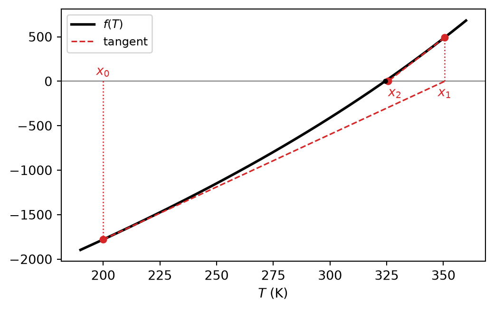
Figure 3.10 shows the first steps from a deliberately poor start, \(x_0 = 200\) K, so that they are visible; from \(T_a\) the tangent would lie almost on the curve. The tangent at \(x_0\) crosses zero at \(x_1 = 350.6\) K, 26 K to the right of the root. That it lands on the right is no accident: \(f'' = 12 \sigma T^2 > 0\), so \(f\) is convex, and the tangent of a convex function lies below the curve. It therefore reaches zero later than \(f\) does. From \(x_1\) on, all estimates lie to the right of the root and approach it from above: \(x_2 = 325.7\) K is within 1.4 K of the root at 324.29 K, and \(x_3\) within 0.004 K.
How fast does it converge? Let \(r\) be the root and \(e_k = x_k - r\) the error. We expand \(f\) around \(x_k\) and evaluate at the root, now keeping the next term in the Lagrange form. The step from \(x_k\) to \(r\) is \(r - x_k = -e_k\):
\[ 0 = f(r) = f(x_k) - e_k \, f'(x_k) + \frac{e_k^2}{2} f''(\xi) , \]
with \(\xi\) between \(x_k\) and \(r\). Dividing by \(f'(x_k)\),
\[ 0 = \frac{f(x_k)}{f'(x_k)} - e_k + \frac{f''(\xi)}{2 f'(x_k)} \, e_k^2 , \]
and rearranging,
\[ e_k - \frac{f(x_k)}{f'(x_k)} = \frac{f''(\xi)}{2 f'(x_k)} \, e_k^2 . \]
The left hand side is \(x_k - r - f(x_k)/f'(x_k) = x_{k+1} - r = e_{k+1}\) by Equation 3.14. Hence
\[ e_{k+1} = \frac{f''(\xi)}{2 f'(x_k)} \, e_k^2 \approx \frac{f''(r)}{2 f'(r)} \, e_k^2 . \tag{3.15}\]
The new error is proportional to the square of the old one: quadratic convergence. An error of \(10^{-3}\) becomes \(10^{-6}\) and then \(10^{-12}\); the number of correct digits doubles in every iteration. The argument requires \(f'(r) \ne 0\), a simple root. At a double root, where \(f\) touches zero without crossing, \(f'(r) = 0\) and Newton’s method converges only linearly. The sign of the factor also confirms the picture: with \(f'' > 0\) and \(f' > 0\) it is positive, so \(e_{k+1} > 0\), and every estimate after the first lies to the right of the root.
The code finds the root with both methods. It then repeats the Newton steps from \(T_0 = T_a\) and prints the error and the ratio \(e_{k+1} / e_k^2\), which according to Equation 3.15 should approach \(f''(r) / (2 f'(r))\), with \(f''(T) = 12 \sigma T^2\).
sigma = 5.67e-8 # Stefan-Boltzmann constant, W m^-2 K^-4
h = 10.0 # transfer coefficient, W m^-2 K^-1
Ta = 288.0 # air temperature, K
Q = 990.0 # absorbed radiation, W m^-2
def f(T): # energy out minus energy in
return sigma * T**4 + h * (T - Ta) - Q
def dfdT(T): # derivative of f
return 4 * sigma * T**3 + h
def bisection(f, a, b, tol):
fa = f(a)
k = 0 # counts the iterations
while (b - a) / 2 > tol: # midpoint not yet within tol of the root
c = (a + b) / 2 # midpoint
fc = f(c)
k = k + 1
if fa * fc <= 0: # different signs: the root is in [a, c]
b = c
else: # same sign: the root is in [c, b]
a = c
fa = fc
return (a + b) / 2, k # return two values: the root and k
def newton(f, dfdx, x, tol):
k = 0
step = 2 * tol # any value > tol, so that the loop starts
while abs(step) > tol and k < 50: # stop after 50 iterations at most
step = -f(x) / dfdx(x) # Newton step
x = x + step
k = k + 1
return x, k
root_b, k_b = bisection(f, Ta, Ta + Q / h, 1e-12) # receive both values
root_n, k_n = newton(f, dfdT, Ta, 1e-12)
print(f"bisection: T = {root_b:.12f} K after {k_b} iterations")
print(f"Newton: T = {root_n:.12f} K after {k_n} iterations")
r = root_n # the root, as reference
d2f = 12 * sigma * r**2 # second derivative f''(r)
C = d2f / (2 * dfdT(r))
T = Ta
error_old = abs(T - r)
for k in range(1, 4):
T = T - f(T) / dfdT(T)
error = abs(T - r)
ratio = error / error_old**2
print(f"iteration {k}: error = {error:.1e} K, error / old error^2 = {ratio:.5f}")
error_old = error
print(f"predicted ratio f''(r) / (2 f'(r)) = {C:.5f}")bisection: T = 324.291588862769 K after 46 iterations
Newton: T = 324.291588862769 K after 5 iterations
iteration 1: error = 2.6e+00 K, error / old error^2 = 0.00199
iteration 2: error = 1.4e-02 K, error / old error^2 = 0.00202
iteration 3: error = 3.9e-07 K, error / old error^2 = 0.00202
predicted ratio f''(r) / (2 f'(r)) = 0.00202from scipy.optimize import root_scalar
sigma, h, Ta, Q = 5.67e-8, 10.0, 288.0, 990.0
f = lambda T: sigma * T**4 + h * (T - Ta) - Q
dfdT = lambda T: 4 * sigma * T**3 + h
b = root_scalar(f, bracket=[Ta, Ta + Q / h], method="bisect", xtol=1e-12)
n = root_scalar(f, fprime=dfdT, x0=Ta, method="newton", xtol=1e-12)
print(f"bisection: T = {b.root:.12f} K after {b.iterations} iterations")
print(f"Newton: T = {n.root:.12f} K after {n.iterations} iterations")bisection: T = 324.291588862769 K after 47 iterations
Newton: T = 324.291588862769 K after 5 iterationsThe errors of the Newton iteration show the squaring predicted by Equation 3.15: 2.6 K, then 0.014 K, then \(4 \cdot 10^{-7}\) K; the exponent roughly doubles from one iteration to the next, and the ratio \(e_{k+1}/e_k^2\) agrees with the predicted value to three digits. The ratio is small, 0.002 K-1, because the curvature of \(f\) is small compared with its slope. One more iteration reaches the round-off level, about \(10^{-13}\) K for numbers near 300; the error can then not decrease further. SciPy’s bisection counts one iteration more than ours because it uses a slightly different stopping test. while conditions can be combined with and: the loop continues only while both are true. The second condition protects against an endless loop if the iteration does not converge. A function can return several values separated by commas; they are received as root_b, k_b = ....
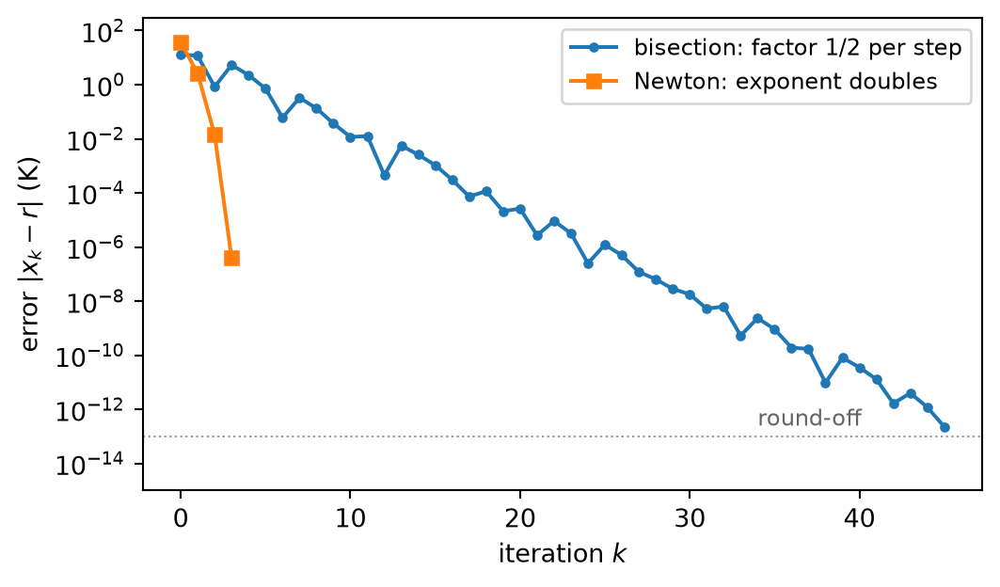
Figure 3.11 compares the two rates. On a logarithmic axis the bisection error falls along a straight line, on average by a factor of 2 per iteration. It does not fall monotonically, because a midpoint can by chance lie closer to the root than the next one; the bound \((b - a)/2^{k+1}\) decreases monotonically. The Newton error curve bends downward ever more steeply, because the exponent doubles, and it reaches the round-off level after four iterations, where bisection needs about 45.
The speed has a price, which is also visible in Equation 3.15. Newton’s method needs the derivative. And it needs a starting value that is close enough: the argument assumed that \(e_k\) is small, and where \(f'(x_k) \approx 0\) the tangent is nearly horizontal and the next estimate is thrown far away. The energy balance is a friendly case, with \(f' > 0\) and \(f'' > 0\) everywhere; the box below shows less friendly ones. In practice the two methods are combined: bisection until the interval is small, then Newton. scipy.optimize.root_scalar offers such safeguarded methods, for example method="brentq".
TipTry it: when Newton’s method fails
The preset equation is \(\cos x = x\), written as \(f(x) = \cos x - x = 0\), with the bracket \([0, 1]\) for bisection and the start \(x_0 = 0.5\) for Newton’s method.
- Run it. Compare the number of iterations.
- Start Newton at \(x_0 = 5\) and \(x_0 = 20\). Is the root still found?
- Replace the function by \(f(x) = x^3 - 2x + 2\) (derivative \(3x^2 - 2\)), the bracket by \([-2, -1]\) and start Newton at \(x_0 = 0\). What happens?
NoteWhat you should see
- Bisection needs 39 iterations, Newton 5; the steps show the doubling of the exponent.
- At \(x_0 = 5\) the derivative \(f'(5) = -\sin 5 - 1 = -0.04\) is almost zero (\(f'\) vanishes at \(3\pi/2 = 4.71\)), and the first step throws the iterate to \(-110\). The iterates then jump between large positive and negative values, once beyond \(-3600\), and after 20 iterations the root is not found. With
range(1, 41)the iteration reaches 0.739 after 22 iterations, by luck. From \(x_0 = 20\) it needs 9 iterations. Newton’s method converges fast only once it is close to the root. - Newton’s method cycles: \(x_0 = 0\), \(x_1 = 0 - 2/(-2) = 1\), \(x_2 = 1 - 1/1 = 0\), and so on, forever. Bisection finds the root \(-1.769\) without trouble. This is why practical root finders combine both: a safe bracket and fast Newton steps.
3.4.3 Newton’s method for systems
Newton’s method is important for a further reason: it generalises to systems. For \(N\) equations \(\vec F(\vec x) = 0\) in \(N\) unknowns, the Taylor series of each component \(F_i\) to first order is
\[ F_i(\vec x_k + \delta \vec x) \approx F_i(\vec x_k) + \sum_{j=1}^{N} \frac{\partial F_i}{\partial x_j}(\vec x_k) \, \delta x_j , \]
or, in matrix form,
\[ \vec F(\vec x_k + \delta \vec x) \approx \vec F(\vec x_k) + J(\vec x_k) \, \delta \vec x , \qquad J_{ij} = \frac{\partial F_i}{\partial x_j} , \]
with the Jacobian matrix \(J\) in the place of the derivative. Setting the right hand side to zero gives a linear system for the update:
\[ J(\vec x_k) \, \delta \vec x = - \vec F(\vec x_k), \qquad \vec x_{k+1} = \vec x_k + \delta \vec x . \tag{3.16}\]
Example. The circle \(x^2 + y^2 = 4\) and the hyperbola \(x y = 1\) intersect in four points. With
\[ \vec F(x, y) = \begin{pmatrix} x^2 + y^2 - 4 \\ x y - 1 \end{pmatrix}, \qquad J(x, y) = \begin{pmatrix} 2x & 2y \\ y & x \end{pmatrix} \]
and the starting point \((2, 0.5)\), Newton’s method finds the intersection near it. The exact value is \(x = \sqrt{2 + \sqrt 3} \approx 1.9319\), \(y = 1/x \approx 0.5176\).
x, y = 2.0, 0.5 # starting point
for k in range(1, 6):
F = np.array([x**2 + y**2 - 4, # the two equations
x * y - 1])
J = np.array([[2 * x, 2 * y], # the Jacobian matrix, row by row
[y, x ]])
delta = np.linalg.solve(J, -F) # solve J delta = -F
x = x + delta[0]
y = y + delta[1]
error = abs(x - np.sqrt(2 + np.sqrt(3))) # distance from the exact x
print(f"iteration {k}: x = {x:.12f}, y = {y:.12f}, error in x = {error:.1e}")iteration 1: x = 1.933333333333, y = 0.516666666667, error in x = 1.5e-03
iteration 2: x = 1.931852741096, y = 0.517637054822, error in x = 1.1e-06
iteration 3: x = 1.931851652579, y = 0.517638090204, error in x = 8.0e-13
iteration 4: x = 1.931851652578, y = 0.517638090205, error in x = 2.2e-16
iteration 5: x = 1.931851652578, y = 0.517638090205, error in x = 0.0e+00from scipy.optimize import root
F = lambda v: [v[0]**2 + v[1]**2 - 4, v[0] * v[1] - 1]
J = lambda v: [[2 * v[0], 2 * v[1]], [v[1], v[0]]]
print(root(F, [2.0, 0.5], jac=J).x)[1.93185165 0.51763809]Again the number of correct digits doubles in every iteration, until the round-off level is reached. np.linalg.solve(J, -F) solves the linear system \(J \, \delta \vec x = -\vec F\); how this is done is the subject of the next unit.
A nonlinear problem is thus replaced by a sequence of linear ones. This is how nonlinear PDEs such as the Richards equation are solved (Chapter 17), and it is one reason why the solution of linear systems, the subject of the next unit, is so central.
3.5 Summary
- Finite difference formulas and their truncation errors follow from the Taylor series by combining series so that unwanted terms cancel. The forward and backward differences are of first order, the central differences for the first and second derivative of second order. For any stencil, the weights follow from a linear system.
- The order of a method is measured as the slope of the error in a log–log plot, or from the ratio of the errors for two step sizes. This is the basic verification test.
- Round-off limits the accuracy of a finite difference. The optimal step balances truncation and round-off error and is far larger than the machine epsilon: about \(\sqrt\varepsilon\) for the forward and \(\varepsilon^{1/3}\) for the central difference.
- Linear interpolation and the midpoint and trapezoidal rules are of second order. Polynomials of high degree on equidistant points oscillate (Runge). Combining two rules whose errors have opposite signs gives a rule of higher order, such as Simpson’s rule.
- Bisection converges linearly and always. Newton’s method converges quadratically near a simple root and generalises to systems, where each iteration solves a linear system with the Jacobian.
3.6 Further reading
LeVeque (2007), chapter 1, for finite difference approximations; Fornberg (1988) for stencils on arbitrary grids.